Instant, not clever
Pointing, window layouts, timers, tab tidying and screen watchers are recognised and run directly. The model only handles what needs thinking.
For Mac · Free · Open source
Hold ⌃⌥ and ask. Wisp sees your screen, points at what matters, and handles the busywork. Everything runs on your Mac.
No account · No API key · No analytics · macOS 26+ on Apple silicon
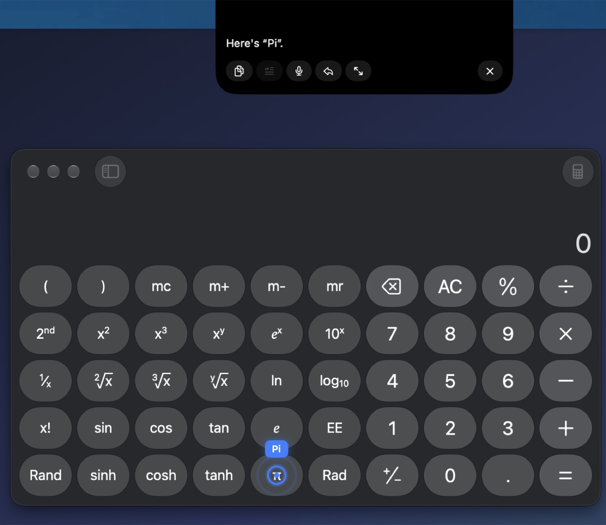
Pointing, window layouts, timers, tab tidying and screen watchers are recognised and run directly. The model only handles what needs thinking.
Speech, voice and screen reading run on your Neural Engine. The default model runs locally. Nothing leaves your Mac unless you opt in.
Anything that sends, deletes, pays, posts or runs a command shows a card with exactly what will happen, even with auto-approve on.
Just say it, or tap ⌃⌥ to type. Many of these never touch a model at all.
What it does
Ask where a control is and a pulsing, labelled marker lands on it. Wisp matches your words against the Accessibility tree and on-device OCR, so it works in native apps, terminals, images and remote desktops, on whichever monitor it is on.
Ask how to do something and Wisp turns the answer into numbered steps over your live screen. It finds each next control again as the screen changes, ticks steps off as you click, and can click for you.
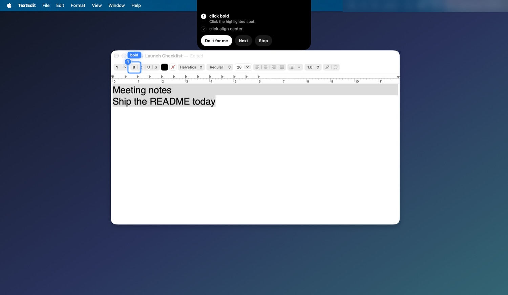
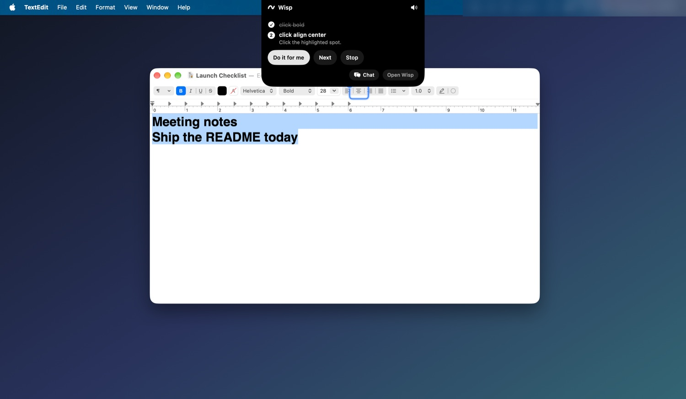
Point Wisp at a problem and it writes handwritten working beside it, one line at a time, then lets you step through. Save the finished page as a PNG with a Markdown summary.
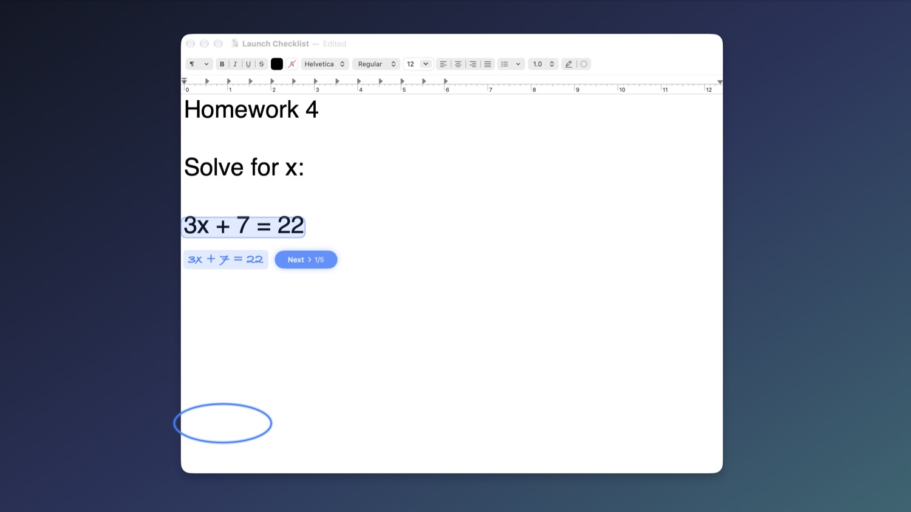
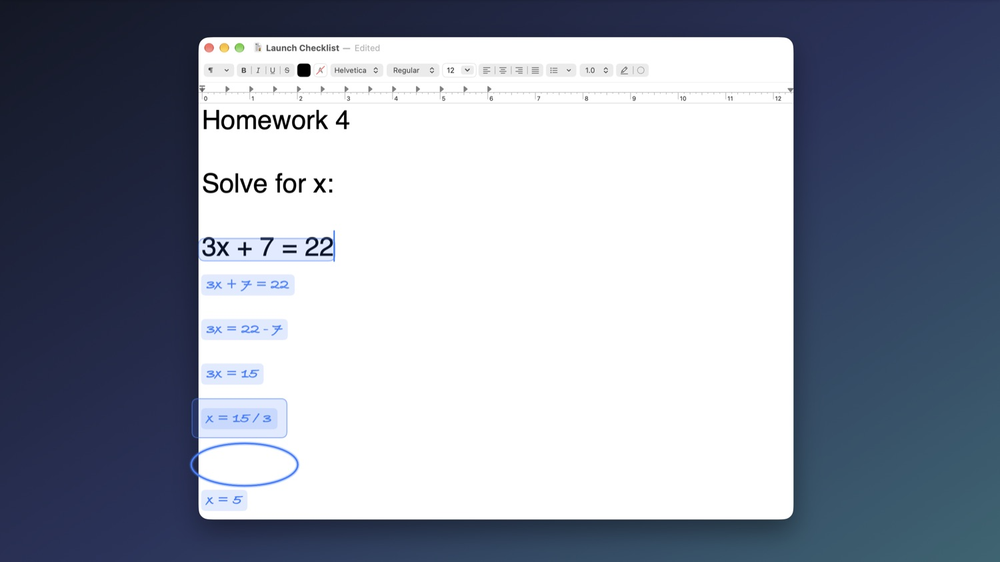
Drag a box around anything, or say “explain option C”. Wisp highlights exactly what you chose, and follow-ups like “why?” and “next step” stay about that region.
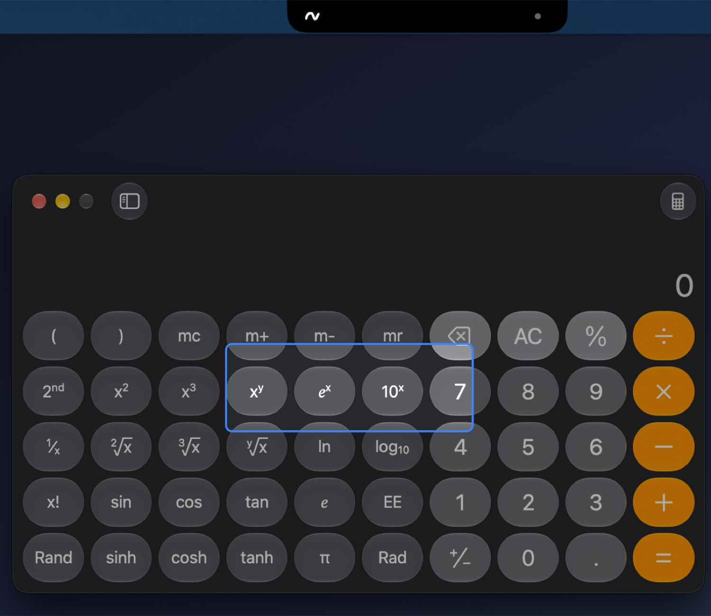
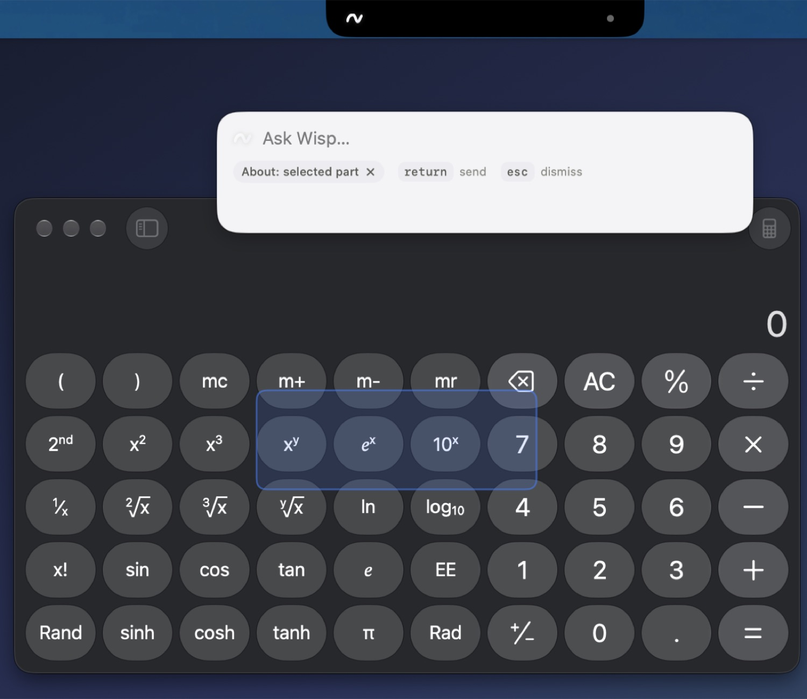
“Put Dictionary on the left and TextEdit on the right.” Halves, quarters, thirds, maximize, center and next-display, with no model call and a one-line confirmation in the notch.
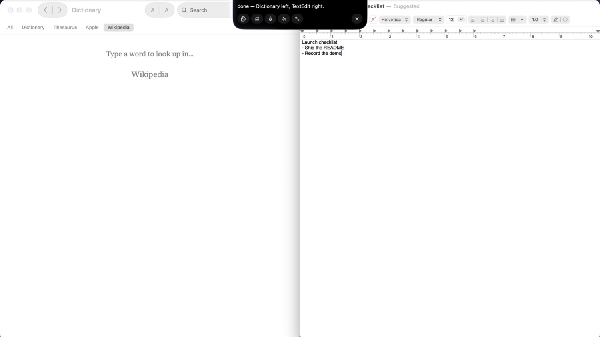
“Open Wikipedia and search for the Enigma machine.” Wisp works through the page itself, in its own tab (never the one you are reading), then tells you where it landed.
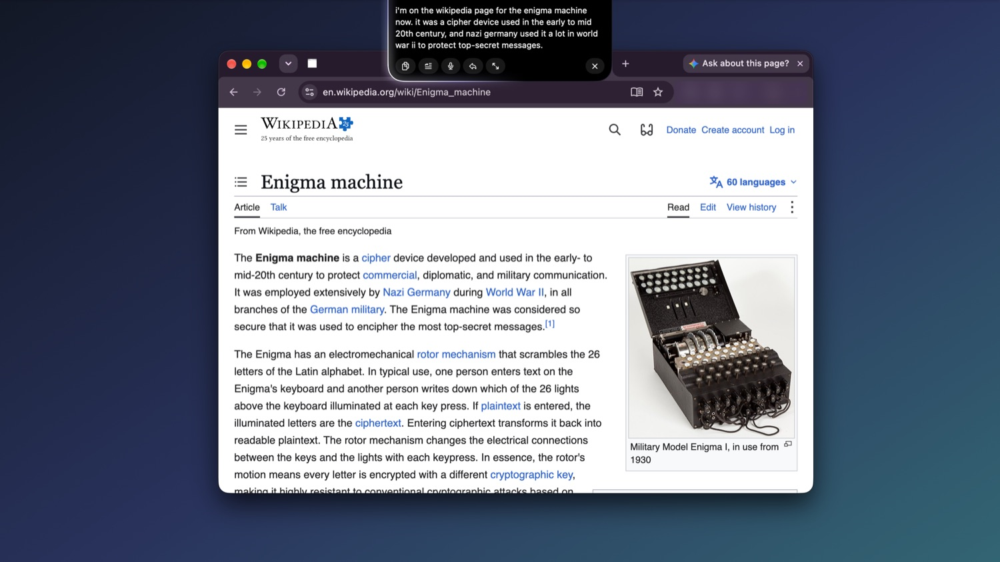
An email request opens an editable draft, and nothing leaves your Mac until you press Send. Riskier actions, like running a Shortcut, show a card with exactly what will happen and a countdown. Edit the wording right on the card.
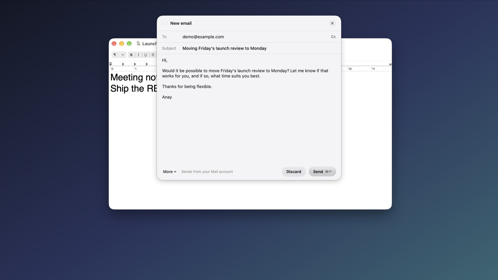
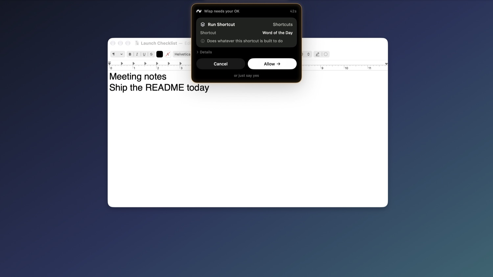
While you're away
Buddies have their own thread, memory, model and tool allow-list. Automations run on a schedule or when something happens, and only interrupt you when it matters.
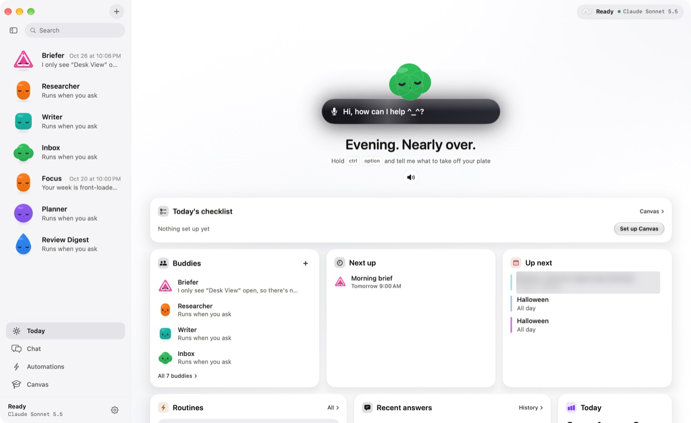
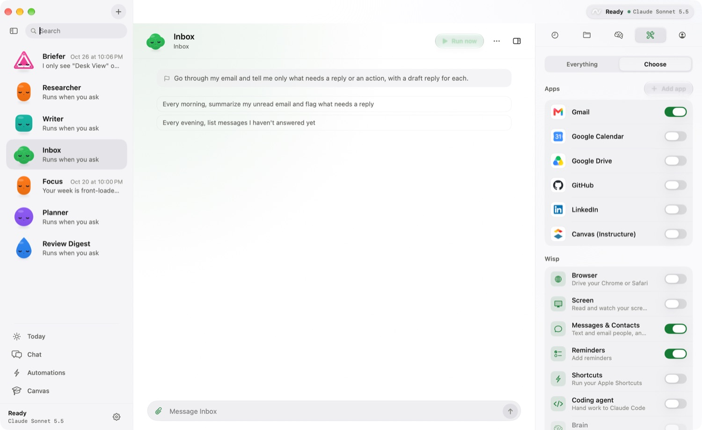
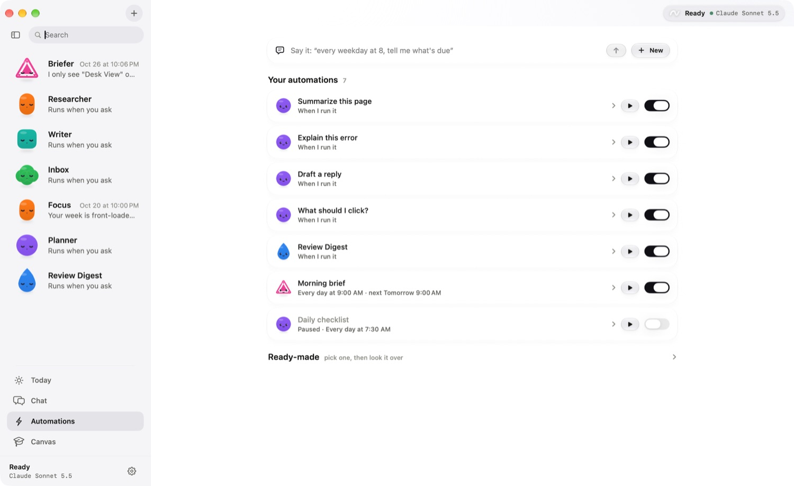
How it works
From any app. Tap instead to type, or double-tap ⌃ for hands-free. Your words are transcribed on the Neural Engine, in 25 languages.
Rigid requests run directly. Everything else goes to your model with a small screenshot, the Accessibility tree and on-screen text.
Answers appear in the notch, markers land on screen, tools run. Anything irreversible waits for your OK.
Privacy
By default, nothing about your screen, voice or words leaves this machine.
The default model runs on your Mac through Ollama. Brain pages are plain markdown files on your disk.
Claude, GPT and Gemini are bring-your-own-key, or use your Claude subscription. Wisp labels clearly when a screenshot would leave your Mac.
No account, no analytics code, no telemetry. Keys and feed URLs live in your login Keychain. The usage log keeps counts, never content.
Your model, your call
Get Wisp
Notarized downloads aren't published yet, so for now you build it once in Xcode. It's free and MIT licensed.
# 1. a local model
ollama pull qwen2.5vl:3b
# 2. get Wisp
git clone https://github.com/anaylab/wisp.git
cd wisp
open leanring-buddy.xcodeproj
# 3. pick the leanring-buddy scheme and press ⌘R,
# then hold ⌃⌥ and talkBefore you try it
Yes. Wisp is open source under the MIT license, and the default setup costs nothing to run because the model, speech and voice are all on your Mac. If you choose a cloud model, you pay that provider with your own key or subscription.
By default, nothing. Speech to text, voice, OCR and the local model all run on-device. The only network use by default is a one-time download of the speech models and optional weather and places lookups, which send a place name or query, never a screenshot. If you pick a cloud model, your transcript and screenshots go to that provider, and Wisp says so.
Anything that sends, deletes, pays, posts, invites or runs a command shows a card first, even if you turned on auto-approve, and you can edit the wording before you allow it. Password and payment fields in the browser are refused outright. Scheduled automations only get tools that never prompt.
An Apple-silicon Mac on macOS 26 or later, since the notch uses Liquid Glass. 16 GB of memory is recommended for the local model. You need Xcode 26 to build it.
Pointing, walkthroughs and screen reading work anywhere: native apps through Accessibility and everything else through on-device OCR. Browser control works with Chrome and Safari.
There is no notarized build published yet, and I'd rather say so than point you at something half-finished. Building it takes a few minutes in Xcode, and signed releases are on the way.